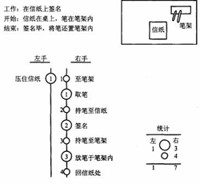
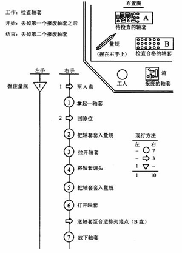

1 . 教学安排
2 . 操作分析的定义与类型
3 . 人机操作分析
4 . 联合操作分析
5 . 双手操作分析
 双手操作分析的意义与作用
双手操作分析的意义与作用
双手操作程序图的画法
双手操作程序图的分析要点
双手操作程序图实例分析
6 . 思考与练习题
 返回课程学习首页
返回课程学习首页
双手操作程序图的画法
1．绘制双手操作程序图的要点
(1)必须深入生产现场，观察全部操作，了解情况，并决定操作中的循环周期及起点与终点。
(2)作图时，先在左上角记录有关资料，如现行方法、改良方法、工作名称、研究日期与编号，操作人、研究人、核准人的姓名及起点(开始)、终点(结束)、工具、材料、工件的规格、精度等。
(3)右上角画工作场所的平面布置图(如工作台上的布置)，表示操作对象、操作工具的名称。
(4)图的中间分别记录左右手动作。边观察、边记录，一次观察一只手的动作。通常先记录右手，将其动作记录于纸的中间靠右边，并反复补充、核对、改正，切勿遗漏。再以同样的程序及要求记录左手的动作于纸的中间靠左边。必须注意，左右手的同时动作应画在同一水平位置，并且要多次核对左右手动作的关系，使记录准确无误。
(5)记录完成后，应将左右手的动作分别进行统计，统计资料可放在左右手动作的右方或右下方。
2．简单画法
最简单的双手操作程序图，仅用下面两种符号：
○ ：小圈表示伸手或运送；
○ ：大圈表示握取、对准、使用及放下物件的动作。
例如：在信纸上签名，双手操作程序图如图6-14所示。

图6-14 信纸上签名的双手操作程序图
3．一般画法
上述简单画法由于未按动作性质分类，故分析时不易区别。常用的双手操作程序图的一般画法多用三种或四种以上符号表示：
—— 表示操作，即握取、放置、使用、放手的动作；
—— 表示搬运，即手移动的动作；
—— 表示等待，即手的延迟、停顿；
—— 持住，表示手持住工件、工具或材料的动作。
—— 检查。此符号用得不多，因为工人在检查物件时(握住物件进行观察或测量)，
可根据具体情况用操作或其他符号表示。当然也可以用检查符号。
图6-15为用一般画法绘制的检查轴套长度及装入套筒的双手操作程序图。

图6-15 检查轴套长度及装入套筒的双手操作程序图